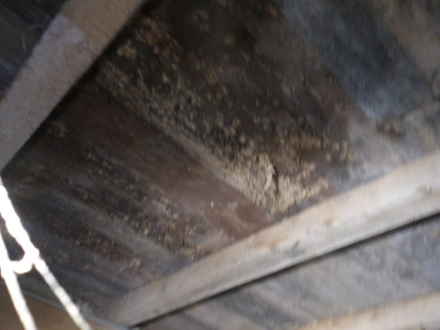
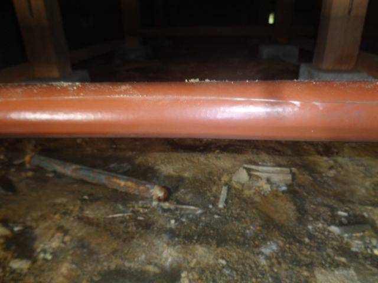
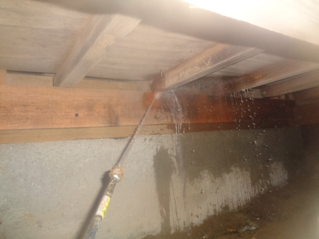

1. 床下環境の確認
床下の湿気、地面の状態、通風状況、漏水や雨水侵入の形跡などを確認します。
株式会社カンワースでは、床下環境の確認、含水率測定、カビ・腐朽菌・シロアリ等の確認、 必要に応じた防カビ・防腐対策まで対応しています。 空き家や長期間管理されていない住宅の床下確認にもご相談いただけます。
湿気・通風不足・含水率上昇が重なると、床下でカビや生物劣化が進むことがあります。
見た目だけでなく、湿気・通風・含水率・周辺環境も含めて確認することが大切です。

表面だけを見るのではなく、床下環境全体を確認しながら判断します。
床下の湿気、地面の状態、通風状況、漏水や雨水侵入の形跡などを確認します。
木材含水率が高い状態では、カビや腐朽菌が発生しやすくなるため、数値確認も重要です。
防カビ・防腐対策だけでなく、必要に応じてホウ酸処理なども含めて検討します。
施工前・施工中・施工後の流れがわかるように掲載しています。

床下の湿気や木部の状態を確認し、カビ・環境悪化の有無を見ていきます。

状況に応じて防カビ・殺菌処理を行い、床下木部や周辺部に対応します。

施工後の状態を確認し、今後の注意点や必要な管理の方向もご案内します。
床下カビだけでなく、湿気・通風・建物管理の視点も重要です。
床下カビは、木材含水率の上昇や、空き家での換気不足・管理不足などと 関係していることがあります。詳しく知りたい方は、以下のページもご覧ください。
床下の状態や建物状況に応じて、必要な確認とご提案を行います。
床下の臭い、湿気、カビ、空き家の状態などをお伺いします。
床下環境、木部状況、含水率、通風、漏水等を必要に応じて確認します。
必要に応じて防カビ・防腐・殺菌処理や、関連対策をご提案します。
施工後の状態確認と、今後の管理や注意点についてご案内します。
床下を主軸としつつ、建物内の天井・壁面等の防カビ施工にも対応しています。

事務所や施設内の天井・壁面など、床下以外の防カビ施工にも対応しています。

湿気や地面の状況、周辺部の状態なども含めて、建物の劣化要因を確認します。
※ このページでは床下カビ対策を中心に掲載していますが、建物状況に応じてその他の防カビ施工についてもご相談いただけます。
床下は普段見えないため、気づいたときには環境悪化が進んでいることもあります。 カビだけでなく、湿気・含水率・腐朽菌・シロアリなども含めて確認したい方は、お気軽にご相談ください。
ご質問・ご相談・床下確認のご依頼など、お気軽にご連絡ください。